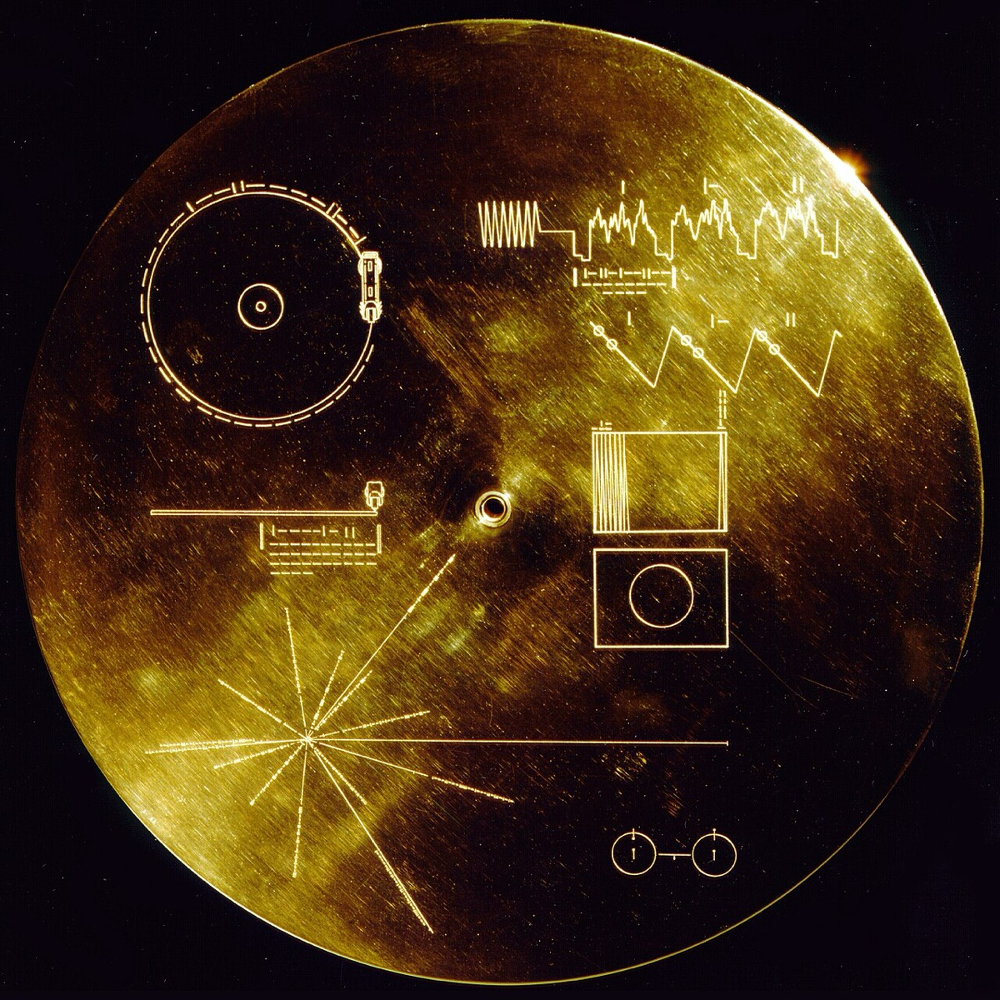

1977: Bach leaves the solar system

In the summer of 1977, Carl Sagan's committee faced a problem no committee had ever faced: choosing what humanity should say to whoever, or whatever, might one day find us. The Voyager Golden Record — a gold-plated disc of Earth's sounds and music, mounted on each of the two Voyager probes and built to survive a billion years of interstellar travel — would outlast the pyramids, the continents' present shapes, possibly the species that sent it. Its twenty-seven music tracks were, in effect, the shortest anthology ever compiled under the heaviest editorial pressure in history. And when the selections were done, one composer had three tracks — more than any other, from any century, from any culture on Earth.
The choices themselves trace, in miniature, the arcs of this whole timeline. The record's opening music is the first movement of the Second Brandenburg Concerto, in Karl Richter's recording — the first thing an alien ear would hear of human art. There is the Gavotte en rondeaux from the E-major violin Partita, played by Arthur Grumiaux. And there is the Prelude and Fugue in C from the second book of the Well-Tempered Clavier, played by Glenn Gould — so that the 1955 revolution, the recording that made counterpoint a modern thrill, is itself aboard, the modernists' Bach dispatched to the stars in the modernists' chosen medium.
The era's best joke about the selection belongs to the biologist Lewis Thomas, who, asked what humanity should send to the stars, answered: "I would vote for Bach, all of Bach, streamed out into space, over and over again. We would be bragging, of course, but it is surely excusable for us to put the best possible face on at the beginning of such an acquaintance." The line is quoted everywhere because it does something rare: it makes the highest possible claim for a body of work while cheerfully admitting the vanity of making it. The committee, in effect, agreed with Thomas — and hedged only on quantity.
Both probes have since crossed into interstellar space, and the discs they carry are the most distant human-made objects in existence, outbound forever. It is worth pausing over what, exactly, is on them, because the origins of the three pieces are almost comically modest against their destination. The record opens with a court entertainment dedicated to a margrave who, as far as anyone knows, never had it played — presentation music that sat in a library while its composer's employer's budget dwindled. The Gavotte comes from the solo violin music of the widower year, written in the shadow of Maria Barbara's death for an instrument alone. The prelude and fugue come from the old cantor's teaching book, music composed to train students' hands and minds. An unplayed gift, a private grief, a lesson: this is what the species chose when it had one chance to introduce itself. None of it was written for glory in any form its composer could have imagined — which is, perhaps, the deepest thing the selection says about how this music works. It was written to be adequate to its occasions, and its occasions turned out to include this one.
For this timeline, the event has a design consequence that is stated here plainly. The site's visual brief — the ethereal, never-ending streams flowing from Bach's creations into the forever — was conceived as a metaphor, and on 20 August 1977 it stopped being one. There are, at this hour and every hour since, physical objects carrying this music away from the Sun at tens of thousands of miles an hour, and there is no known process that will stop them. The app should end its ribbon here, literally: the music, leaving.
Continue with the era essay: The Living Bach: 1850–present, or return to Earth for the arc's quiet finale: the completeness era.
NASA Voyager Golden Record contents (see Bibliography)
Sagan et al., Murmurs of Earth
→ full bibliography & links